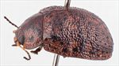
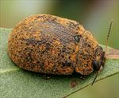
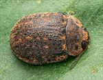
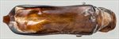
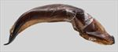
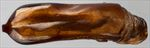
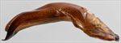
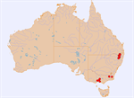

Click on images to enlarge
{kind=link}

Male, Torrington, N.E. New South Wales
{kind=link}

Female, Glen Innes, N.E. New South Wales
{kind=link}

Male, Tenterfield, N.E. New South Wales
{kind=link}

Aedeagus, dorsal view (Bookookoorara, N.E. New South Wales)
{kind=link}

Aedeagus, lateral view (Bookookoorara, N.E. New South Wales)
{kind=link}

Aedeagus, dorsal view (Brisbane Ranges, Victoria)
{kind=link}

Aedeagus, lateral view (Brisbane Ranges, Victoria)
{kind=link}

Distribution
Name
Trachymela sp. Ta54
Reference specimen
1999-0032a, Torrington, NE New South Wales
Adult Description
Length: ♂ 9.3–10.4 mm (n=14), ♀ 9.5–10.6 mm (n=26).
Colouration:
- Head: mid-brown to dark-brown, clypeus usually darker, sometimes black, usually black around edge of eyes, mandibles black-tipped, sometimes substantially more black; antennomeres 1–2 light-brown, 3–6 grading from light-brown to black with distal parts usually darker, 7–11 black.
- Pronotum: dark-brown, concolorous with or fractionally darker than head, with diffuse, irregular-shaped darker-brown or black areas around lateral margins of discal area and usually extending posteriorly and laterally towards rear margin opposite humeral callus, a small, round, black raised mark behind centre of each eye.
- Scutellum: dark-brown or black, concolorous with darkest region of pronotum.
- Elytra: brown, concolorous with or fractionally lighter than pronotum, with thickened interstices of both base colour and contrasting darker brown (rarely black) scattered over disc and into marginal area so that surface is a complex, fine-scale network of light and dark; many small, dark-brown or black, discrete verrucae, many with fine central punctures, scattered over disc, usually with many of them aligned and regularly spaced in longitudinal series, some behind antero-median depression sometimes very loosely aligned transversely; humeral callus black.
- Venter & Legs: head black laterally, gula usually lighter (sometimes much lighter) in shade, pronotum black or very dark-brown, other thoracic and abdominal ventrites black to very dark-brown, often with lighter-coloured patches; legs similar; epipleura black.
- Cuticular Wax: usually a sparse, less often more thick, layer of uniform light-brown shade over most of dorsal surface, with a higher concentration on head, along lateral margins of pronotum and elytra, and in depressions along anterior margin of elytra; heavier concentrations along the rows of verrucae can give the impression of dotted lines on elytra.
Morphology:
- Head: punctures quite large (pd ≈ 2× ef) and slightly unevenly but moderately densely distributed, sometimes partially obliterated by rugose interstices; antennae moderately long (AL/BL: ♂ 41–46%, ♀ 34–39%), filiform.
- Pronotum: evenly curved transversely over discal region, lateral margins at most very slightly explanate, with foveal depression very shallow or even absent though always with a slight rounded elevation near its centre; puncturation somewhat variable, usually clearly impressed, sometimes slightly less so, evenly to slightly unevenly and densely to more openly distributed in discal area with a mix of puncture sizes usually present, the larger fractionally larger than those on head, becoming somewhat coarser at lateral margins; front margins join much thinner lateral margins in a relatively blunt, sometimes almost mucronate, right-angle, with lateral margin straight for a short distance then curving smoothly and gradually towards rear margin.
- Scutellum: smooth, unpunctured or very lightly punctured near anterior edge with punctures somewhat smaller than those on adjacent area of pronotum.
- Elytra: quite evenly rounded but relatively flat, highest point at or behind middle of elytral margin, ventrites project slightly below elytral epipleura; surface slightly flattened between scutellum and highest point; punctures relatively evenly distributed, distinct only in a strip along suture close to elytral summit, elsewhere obscured by the network of thickened interstices, with much smaller punctures scattered very sparingly on the interstices; raised pimple-like verrucae, darker in colour than substrate, frequently aligned evenly-spaced in longitudinal series; posterior half of marginal area slightly to moderately concave, surface discontinuous under humeral callus; vertical extension of epipleura slight (HCE/PW = 0.26–0.30).
- Venter: prosternal process variable, narrowest anteriorly, rarely almost parallel-sided, closed anteriorly; short setae present at rear of prosternal process and on mesoventrite; a short row of 2–4 long setae (rarely only 1) on anterior and median trochanter; front edge of metaventrite beveled, truncate; inner edge of posterior of epipleura lacking setae.
Male Genitalia (Aedeagus):
- Dimensions: moderately long (LPE/BL = 33–36%).
- Dorsal view: sides of shaft slightly sinuate over central section, narrowing a little from base before widening to reach its widest about 25% of length from apex, from there sides converge towards apex in a smooth arc; dorsal surface smoothly curved with faint dorso-median channel usually present at least for a short distance from ostium; dorsolateral channels well-defined, tip truncate.
- Lateral view: shaft almost evenly curved throughout most of length, then a pronounced downward curve shortly before apex, thinning towards apex over about 20% of length, tip strongly deflexed; flagellum thin, usually missing.
Immature Stages
Unknown.
Similar species
The three species Ta20, Ta54, and Ta75 tend to be very similar in general appearance and can be difficult to distinguish:
- Ta75: This species has a pronotum that tends to be mostly black except at the lateral margins. The elytra have a very rugged sculpture with similar but fewer discrete verrucae than Ta54, though they are similarly placed in longitudinal rows; however, being of a similar very dark shade as the surrounding surface, they tend to be less noticeable. The aedeagi of the two species are completely different in structure.
- Ta20: This species is very close to Ta54 and they can be difficult to distinguish. Ta54 has verrucae that are usually discrete, dark, and well-defined, many of them in rows on the elytral disc, while those of Ta20 are much less clearly defined, more in the nature of raised interstices that are lighter in colour than the surroundings and often joined in longitudinal ridges. Ta20 has predominantly brown inner epipleura in the northern parts of its distribution, while those of Ta54 are always black. The aedeagus of Ta20 is relatively a little shorter, more robust, and more curved than that of Ta54, with a blunter apex.
Notes
- Host Associations: Ta54 has been most frequently found on Eucalyptus viminalis (Symphyomyrtus : Maidenaria) in the south and E. nova-anglica, E. bridgesiana, E. acaciiformis (all Symphyomyrtus : Maidenaria) and unspecified peppermints in the north. A single record from a stringybark and another from a smooth-barked eucalypt are likely to be incidental.
- Morphological Variation: The northern and southern populations of Ta54 are somewhat different structurally (for example, the southern population lacks the clear rows of small verrucae on the elytra that are a distinctive feature of most northern specimens). The Nimmitabel specimens are quite close to those from Torrington in appearance, though they tend to have a more acervate pattern to the pronotal puncturation, and they have a more pronounced difference in width of prosternal process between front and back.
- Population Characteristics: A large proportion of individuals captured are at least slightly teneral.
Copyright © 2026. All rights reserved.